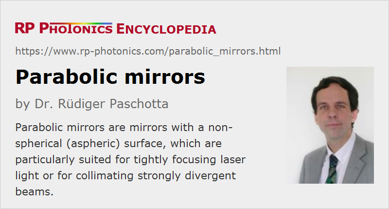

Parabolic Mirrors
Definition: mirrors with the surface shape of a paraboloid, or at least a parabolic cross section
More general term: mirrors
German: Parabolspiegel
How to cite the article; suggest additional literature
Author: Dr. Rüdiger Paschotta
Parabolic mirrors (or parabolic reflectors) are mirrors where a cross section through the optical surface has the shape of a parabola. Typically, the three-dimensional form is that of a paraboloid (i.e., rotationally symmetric), but there are also parabolic mirrors which are curved in only one direction and therefore focus light only in that direction (similar to cylindrical lenses).
A special property of the parabolic shape is that incoming parallel rays are all reflected into the same focal point, as is shown in Figure 1. This would not work for a mirror with spherical shape, which would exhibit so-called spherical aberrations. Parabolic mirrors can be considered as aspheric optics, i.e., optics with a non-spherical shape. (Their radius of curvature gets longer outside the center.) They are also achromatic (like most other mirrors) because in contrast to lenses their operation principle does not involve refraction.
Although ray optics, neglecting the wave nature of light, cannot fully describe light propagation, it correctly suggests that parabolic mirrors are best suited for precisely focusing collimated beams – not only within the paraxial approximation (considering only beams close to the center). Similarly, parabolic reflectors are best suited for collimating tightly focused beams. With them, one can achieve substantial improvements of optical performance in the context of beams with high numerical aperture, i.e., involving extreme angles and high beam divergence.
Off-axis Reflectors
For a centered parabolic mirror as shown in Figure 1, the focus is located on the axis of the incoming beam, which is not practical for many applications: one could not access the focus without disrupting the incoming beam. Therefore, one sometimes requires parabolic off-axis mirrors, where the focus point lies outside the incoming beam. This is illustrated in Figure 2, where the input rays have been restricted to the left side. Here, one may of course omit the right part of the mirror, i.e., make a smaller off-axis reflector from a larger parent mirror. The remaining shape is obviously not one which is parabolic around its center; it is more strongly curved around the bottom.
An off-axis mirror is made for a certain angle of incidence of the central portion of the beam, and will work well only for angles close to that value. It is thus also very important to be sure whether the specified angle of operation is the angle of incidence (for the beam center) or rather the angle between input and output beam, which is twice that angle of incidence.
Due to the mentioned asymmetry, it is obviously important but more challenging to properly align an off-axis reflector to the incoming beam – particularly in cases where it is difficult to measure the precise intensity profile in the focus. It may be helpful to have a shape of the mirror substrate and/or the mirror holder which clearly identifies the direction of the optical axis – for example, with a flat base which is perpendicular to the required beam direction. If the input beam deviates from that direction, there will be distortions in the form of comatic aberrations.
Calculating the Performance of Parabolic Mirrors
As parabolic mirrors are often used in conjunction with highly divergent (or convergent) beams, their performance can often not be accurately calculated with simplified numerical computation methods, e.g. using the paraxial approximation. One should then use a full vector code, not representing light fields as scalar fields, but as full vector fields. One can then also check the possibly significant effect of the polarization of the light.
Parabolic Laser Mirrors
While some parabolic mirrors are broadband metal-coated first surface mirrors (e.g. with protected aluminum or gold coating), which often exhibit too high reflection losses for use as laser mirrors, others are made with dielectric coatings. Typically, these are highly reflecting (HR) coatings, which often need to be designed for a relatively large range of angles of incidence. The surface quality of such parabolic laser mirrors is often particularly high – substantially higher than e.g. mirrors for lighting applications.
Parabolic laser mirrors are not usually used inside lasers, but mostly outside for forming a tight beam focus.
Applications of Parabolic Mirrors
Typically, one uses parabolic mirrors in situations where one either needs to tightly focus a collimated beam or to collimate a tightly focused beam, where the beam divergence is strong in the focus. For example, this can be necessary for high harmonic generation, laser material processing, supercontinuum generation without waveguides, where extreme optical intensities are required, and for fluorescence microscopy. Frequently, off-axis parabolic mirrors are required for such applications.
There are also cases where the beam divergence is small, but a mirror must be used far away from its center. For example, pump radiation in thin-disk lasers is often redirected with a parabolic mirror in conjunction with prism retroreflectors. Also, parabolic reflectors are often used in telescopes, laser scanner systems, spectrometers and lighting.
In most cases, however, spherical laser mirrors are fully sufficient for focusing laser beams, because the involved beam divergence is moderate.
Some parabolic mirrors are offered for use in extreme spectral regions, e.g. in the areas of infrared optics, ultraviolet optics or even optics for X-ray lasers.
Various applications need parabolic mirrors as custom optics, since in comparison to ordinary spherical mirrors there are more essential device parameters, making it difficult to obtain from-stock mirrors which are satisfactory for an application in all respects. Besides the properties of the reflecting surface, the geometric shape of the substrate can be important.
Suppliers
The RP Photonics Buyer's Guide contains 14 suppliers for parabolic mirrors. Among them:
Questions and Comments from Users
Here you can submit questions and comments. As far as they get accepted by the author, they will appear above this paragraph together with the author’s answer. The author will decide on acceptance based on certain criteria. Essentially, the issue must be of sufficiently broad interest.
Please do not enter personal data here; we would otherwise delete it soon. (See also our privacy declaration.) If you wish to receive personal feedback or consultancy from the author, please contact him e.g. via e-mail.
By submitting the information, you give your consent to the potential publication of your inputs on our website according to our rules. (If you later retract your consent, we will delete those inputs.) As your inputs are first reviewed by the author, they may be published with some delay.
Bibliography
| [1] | M. A. Lieb and A. J. Meixner, “A high numerical aperture parabolic mirror as imaging device for confocal microscopy”, Opt. Express 8 (7), 458 (2001), doi:10.1364/OE.8.000458 |
| [2] | A. Drechsler et al., “Confocal microscopy with a high numerical aperture parabolic mirror”, Opt. Express 9 (12), 637 (2001), doi:10.1364/OE.9.000637 |
| [3] | N. Davidson and N. Bokor, “High-numerical-aperture focusing of radially polarized doughnut beams with a parabolic mirror and a flat diffractive lens”, Opt. Lett. 29 (12), 1318 (2004), doi:10.1364/OL.29.001318 |
| [4] | J. Stadler et al., “Tighter focusing with a parabolic mirror”, Opt. Lett. 33 (7), 681 (2008), doi:10.1364/OL.33.000681 |
| [5] | X.-L. Liu et al., “Broadband supercontinuum generation in air using tightly focused femtosecond laser pulses”, Opt. Lett. 36 (19), 3900 (2011), doi:10.1364/OL.36.003900 |
| [6] | A. Couairon et al., “Propagation equation for tight-focusing by a parabolic mirror”, Opt. Express 23 (24), 31240 (2015), doi:10.1364/OE.23.031240 |
| [7] | X. Zeng and X. Chen, “Characterization of tightly focused vector fields formed by off-axis parabolic mirror”, Opt. Express 27 (2), 1179 (2019), doi:10.1364/OE.27.001179 |
See also: mirrors, laser mirrors, aspheric optics, custom optics
and other articles in the category general optics
|  |
If you like this page, please share the link with your friends and colleagues, e.g. via social media:
These sharing buttons are implemented in a privacy-friendly way!